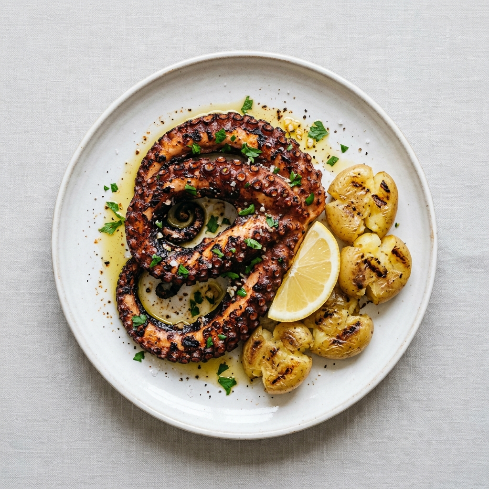
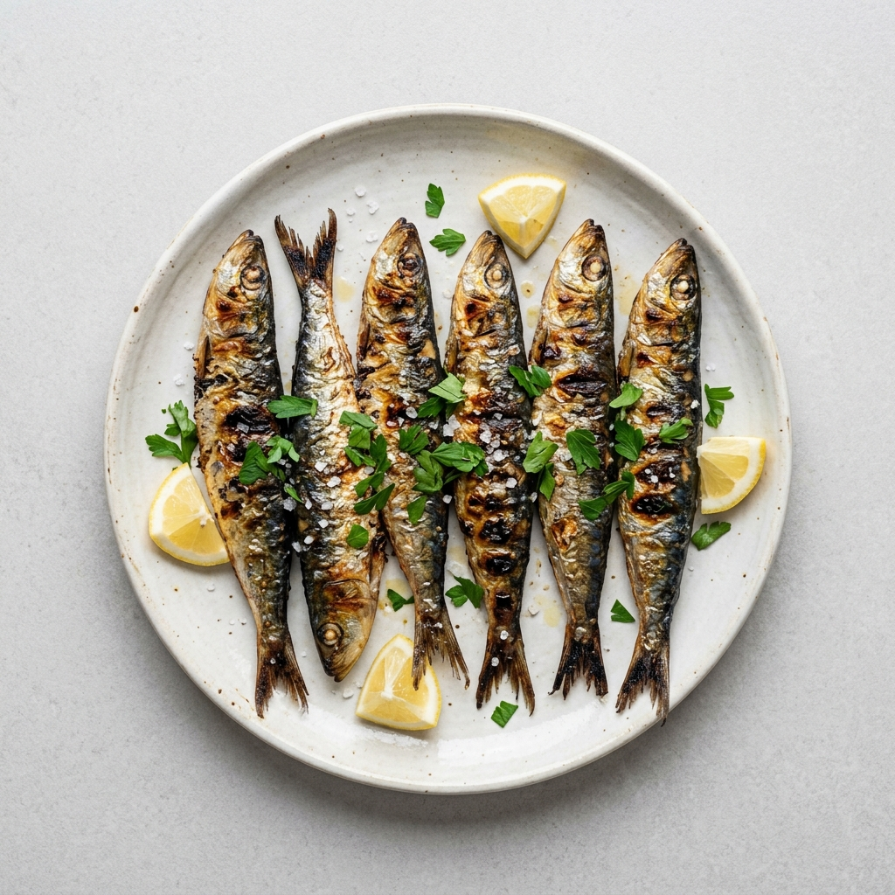
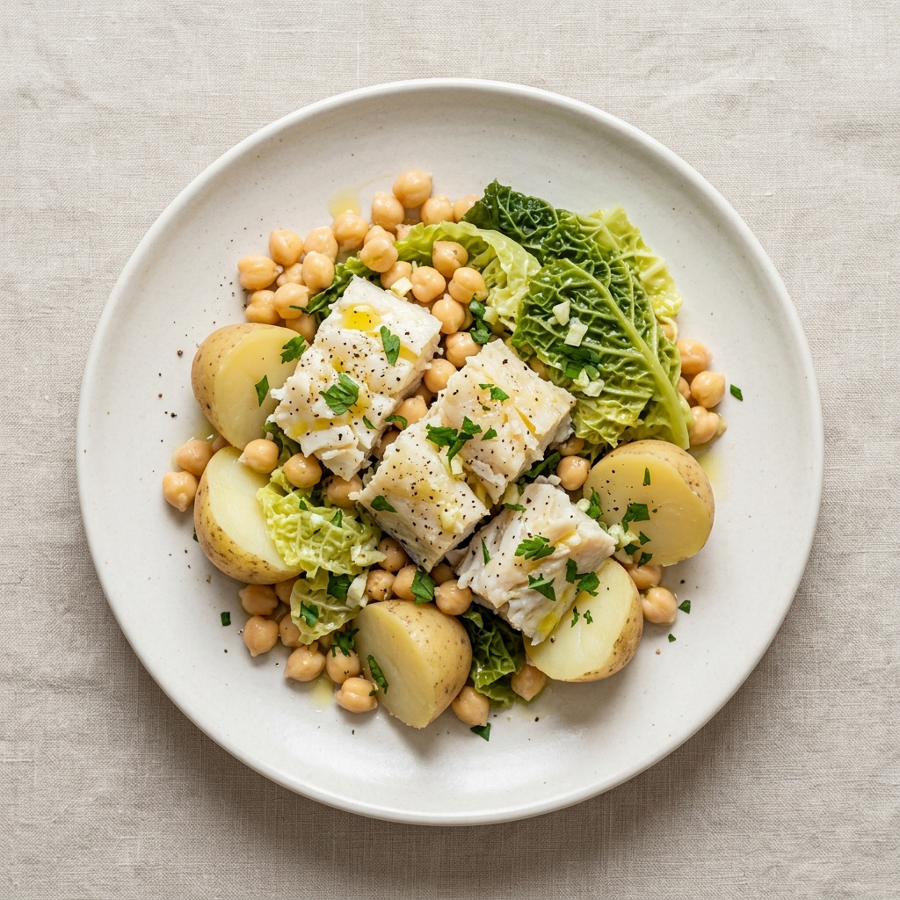
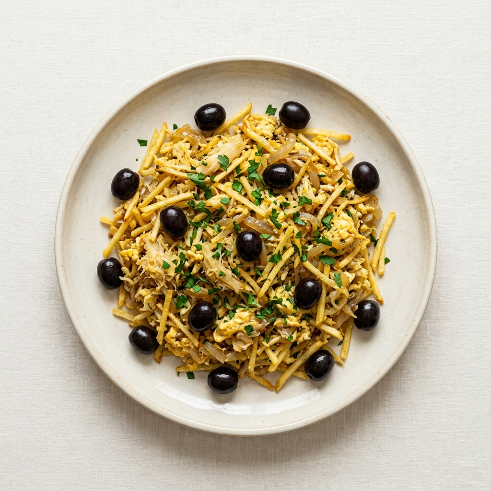
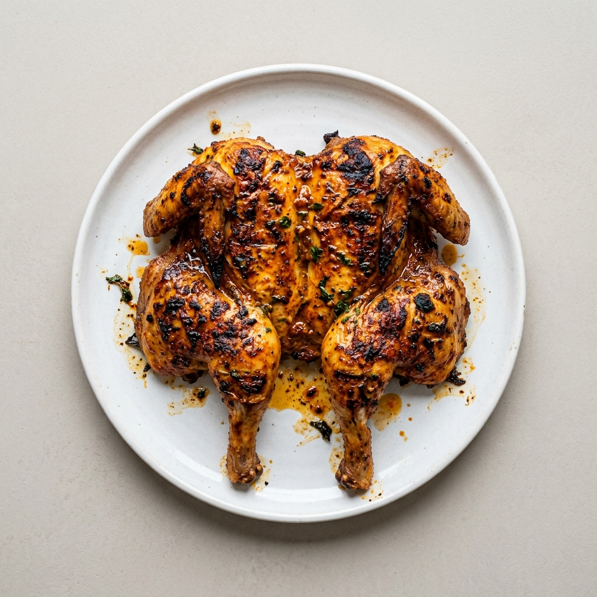
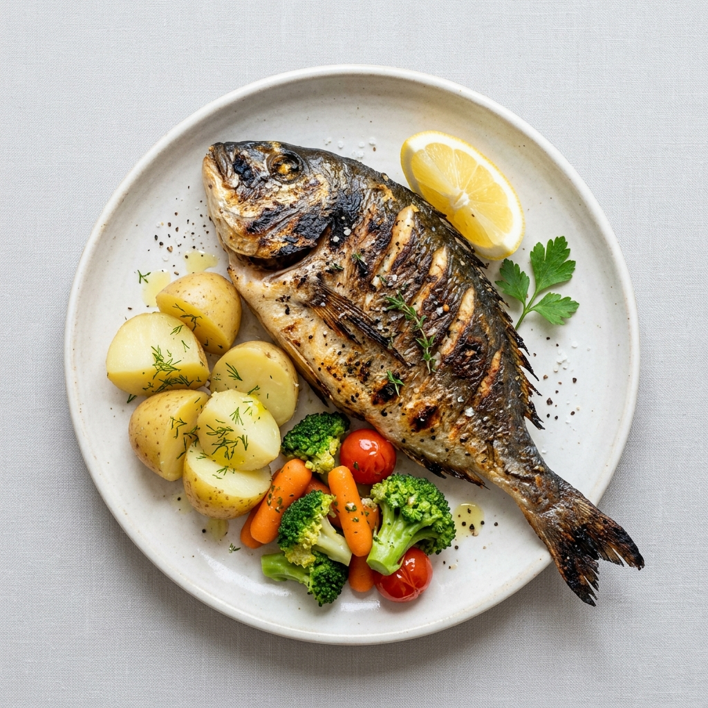

Jak zamawiać
Portugalska kuchnia w wersji domyślnej jest ciężka: frytki do wszystkiego, sporo smażenia i chleb na stole, zanim zdążysz usiąść. W tej samej karcie jest jednak druga wersja: ryba z rusztu, ośmiornica, małże, oliwa i warzywa. Cała różnica polega na tym, co się zamówi.
Couvert to rachunek za to, czego nie zamawiałeś. Chleb, oliwki, masło i pasztet przyniesione zaraz po usadzeniu są płatne, każda pozycja osobno. Odesłanie ich jest tu normalne.
- Prato do dia: danie dnia, zwykle z zupą i kawą w cenie. Najlepszy stosunek ceny do jakości.
- Tasca: mała rodzinna knajpa z krótką kartą po portugalsku. Tam jedzenie jest najlepsze i najtańsze.
- Ryba na wagę: całą rybę wycenia się za kilogram. Pytaj o cenę i wagę sztuki, zanim potwierdzisz.
- Godziny: obiad 12:00 do 15:00, kolacja od 19:30. Poza tym kuchnia bywa zamknięta.
- Napiwek: nieobowiązkowy. Zaokrąglenie rachunku wystarczy.
Sześć dań
W nawiasie przybliżona wymowa. Portugalskie „s” na końcu wyrazu czyta się jak „sz”, a nieakcentowane „o” jak „u”.

Polvo grelhado (polwu greljadu)
Ośmiornica najpierw gotowana, potem na ruszcie. Wersja à lagareiro to ta sama ośmiornica utopiona w oliwie; grelhado jest lżejsze.
z rusztudelikatne

Sardinhas assadas (sardinjasz asadasz)
Sardynki z grilla, z solą, na kromce chleba. Sezon to lato, szczyt w czerwcu. Poza sezonem są chude.
z rusztusezon: czerwiec

Bacalhau cozido com grão (bakaljau kuzidu kong grau)
Dorsz gotowany z ciecierzycą, jajkiem i kapustą, polany oliwą. Wersja bez patelni.
bez smażeniastrączki

Bacalhau à Brás (bakaljau a brasz)
Dorsz ze smażoną cebulą, jajkiem i ziemniakami pociętymi na zapałki. Najpopularniejsza wersja dorsza w kraju.
smażonepopularne

Frango piri-piri (frangu piri-piri)
Kurczak z rusztu z ostrym sosem piri-piri. Najlepszy prosto z lokalnej grillowni.
z rusztupikantne

Peixe grelhado do dia (pejsz greljadu du dia)
Cała ryba z rusztu: dourada, robalo albo sargo. Sól, oliwa, cytryna, gotowane ziemniaki.
z rusztulekkie
Klasyki, które są ciężkie
Warto je znać i raz spróbować, ale to nie jest jedzenie na co dzień.
- Francesinha: kanapka z kilkoma rodzajami mięsa, zapiekana serem, zalana sosem na piwie, z jajkiem i frytkami. Specjalność Porto i pełny obiad w jednym naczyniu.
- Cozido à portuguesa: gotowane mięsa, kiełbasy i warzywa na jednym półmisku. Danie zimowe, podawane w konkretny dzień tygodnia.
- Alheira: kiełbasa z drobiu i chleba, wymyślona przez portugalskich Żydów udających, że jedzą wieprzowinę. Smażona z jajkiem i frytkami; wersja grillowana jest lżejsza.
- Bifana: wieprzowina marynowana w czosnku i winie, w bułce, jedzona na stojąco przy barze. Wersja z wołowiną to prego.
- Peixinhos da horta: fasolka szparagowa w cieście, smażona. Podobno stąd wzięła się japońska tempura.
Słodkie
Portugalskie ciastka wyszły z klasztorów, gdzie białka szły na krochmalenie habitów, a z żółtek robiono słodycze. Stąd cała gablota jest podobna: żółtko, cukier i migdał.
- Pastel de nata (pasztel de nata): tarteletka z kremem budyniowym, przypalona na wierzchu. Warta zachodu tylko ciepła, prosto z pieca, z cynamonem. Oryginał z Belém nazywa się pastel de Belém.
- Travesseiro i queijada: ciasto francuskie z masą migdałową oraz ciastko serowe, oba ze Sintry.
- Bola de Berlim: pączek z żółtym kremem, sprzedawany latem na plaży.
- Owoce: gruszka Rocha, pomarańcze z Algarve, figi i melon latem. Tanie i naprawdę dobre.
Kawa i piwo
Kawa
Tania, dobra, pita na stojąco przy ladzie. Espresso kosztuje mniej niż euro.
- Um café albo uma bica w Lizbonie: zwykłe espresso, domyślne zamówienie.
- Meia de leite: espresso z mlekiem w filiżance, nasza biała kawa.
- Galão: to samo w wysokiej szklance, słabsze.
- Abatanado: dłuższe espresso, najbliżej americano.
Piwo
Sagres i Super Bock, a spór o to, które lepsze, jest regionalny: Sagres na południu, Super Bock na północy.
- Imperial: małe lane piwo, tak zamawiasz w Lizbonie.
- Fino: dokładnie to samo, ale tak mówi się w Porto.
- Caneca: większy kufel.
Do tego vinho verde, młode musujące wino z północy, oraz ginjinha, wiśniowa nalewka pita z małych kieliszków w budkach w centrum Lizbony.